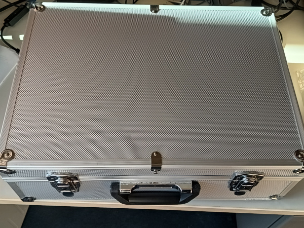
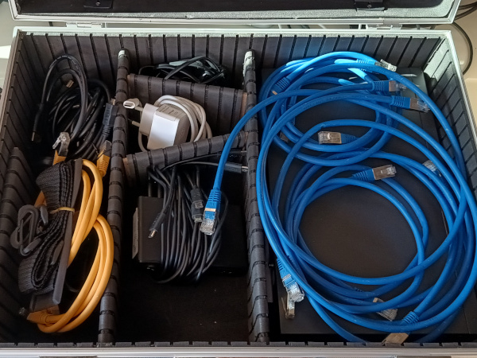
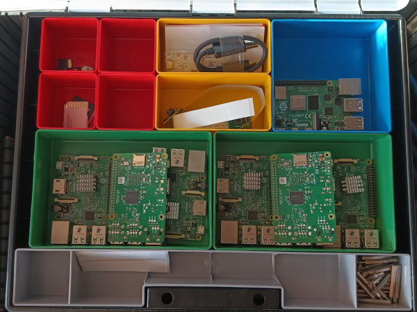

|
|
This seminar applies the fundamentals of distributed systems and cloud computing in practice. Various hardware and software components are combined by groups of students to form a complex system and to enable the practical application of artificial intelligence.
The semester project goal is to develop an edge computing wildlife monitoring solution. Each group of students will develop, build, test, document, and present a complex hardware and software system that automatically detects and identifies specific species from images and videos to monitor and recognize wildlife (cats, dogs, hedgehogs, birds, mice, rats). The semester project includes these tasks:
This course has no written exam! Instead, your individual grade will depend 100% on your work and the results of the semester project.
|  |  |  |
| Date | Time | Room | Event | Topics |
|---|---|---|---|---|
| Canceled due to confusion regarding the regulations to attend the module | ||||
| 16.04.2025 | 10:00 | 1-234 | Semester Project | Semester project introduction, team building, requirement analysis, task identification, time planing |
| 23.04.2025 | 10:00 | 1-234 | Semester Project | Status presentation, teams work for the semester project |
| 30.04.2025 | 10:00 | 1-234 | Semester Project | Status presentation, teams work for the semester project |
| 07.05.2025 | 10:00 | 1-234 | Semester Project | Status presentation, teams work for the semester project |
| 14.05.2025 | 10:00 | 1-234 | Semester Project | Status presentation, teams work for the semester project |
| 21.05.2025 | 10:00 | 1-234 | Semester Project | Status presentation, teams work for the semester project |
| 28.05.2025 | 10:00 | 1-234 | Semester Project | Status presentation, teams work for the semester project |
| 04.06.2025 | ----- | ----- | ----- | Business trip |
| 11.06.2025 | 10:00 | 1-234 | Semester Project | Status presentation, teams work for the semester project |
| 18.06.2025 | 10:00 | 1-234 | Semester Project | Status presentation, teams work for the semester project |
| 25.06.2025 | 10:00 | 1-234 | Semester Project | Status presentation, teams work for the semester project |
| 02.07.2025 | ----- | ----- | ----- | Business trip |
| 09.07.2025 | 10:00 | 1-234 | Presentation | Semester project presentations / demonstrations |
| Slide set 1 | Exercise sheet 1 | Solution | Organisational information, Client-Server, Fundamentals, Laws and Limitations, Parallel Computers |
| Slide set 2 | Exercise sheet 2 | Solution | Cluster Computing |
| Slide set 3 | TBD | TBD | Cloud Computing, Services and Concepts, Opportunities and Risks |
| https://github.com/kamalbhaiii/cloud-computing |
The best way to reach me is via email: christianbaun@fb2.fra-uas.de
|
Prof. Dr. Christian Baun Frankfurt University of Applied Sciences (1971-2014: Fachhochschule Frankfurt am Main) Faculty of Computer Science and Engineering Last updated: June 22th, 2025 |